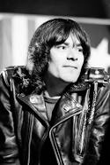

Ramones
Integrantes
Em uma entrevista no youtube Tommy Ramone revela a autoria das principais músicas dos primeiros discos da banda
Joey Ramone
Joey Ramone, nome artístico de Jeffrey Ross Hyman. Ele nasceu em 19/05/1951 em Manhattan, Nova York, e com um ano de idade se mudou com os pais para o bairro de Forest Hills, no Queens.
Sua mãe, Charlotte, sempre foi uma grande apoiadora da carreira de músico de Joey e de seu irmão Mickey. Era uma mulher muito à frente de seu tempo e foi essencial para a formação musical dos filhos. Enquanto muitos pais naquela época achavam inadmissível meninos usarem cabelos compridos e se interessarem por rock and roll, Charlotte nunca se importou e os encorajava a terem seu próprio estilo.
A primeira banda de Joey se chamava "The Intruders".
Joey sempre foi contra o status quo do que significa ‘contribuir’ na sociedade.
A primeira música do Ramones, "I Don't Care", foi criada por Joey quando seu irmão mais novo o ensinava a tocar guitarra. Alguns dias depois, Joey escreveu o que viria a ser a segunda música da banda "Here Today, Gone Tomorrow", usando os mesmos três acordes.
Ele chegou a ser vocalista em uma banda chamada Sniper e começou a impressionar as pessoas com seu jeito único e bizarro no palco. Um gigante de 1,98m se movendo de um jeito peculiar e com uma voz que amadurecia e se tornava cada vez mais poderosa. Foi expulso da banda por não ser bonito o suficiente.
Mas como ele demorava duas horas para conseguir montar a bateria, um dia Dee Dee Ramone sugere que ele seja o vocalista: "Joey era o vocalista perfeito", explicou Dee Dee. "Eu queria alguém bem esquisito, e Joey era realmente estranho, cara, o que foi ótimo para os Ramones. Eu acho muito melhor ter um vocalista que parece todo fodido".
Johnny não gostava da ideia de ter Joey como vocalista, pois o achava feio e esquisito demais, mas Tommy o convenceu de que ele ficava muito bem entre ele e Dee Dee. E assim nasce a formação clássica do Ramones que todos nós amamos.
Seu irmão Mickey Leigh recorda que "foi Joey quem forneceu a fórmula para futuras músicas do Ramones com suas contribuições iniciais: o minimalismo, a duração de dois minutos, o máximo de três acordes, letras existenciais compostas de duas linhas em sua totalidade. Os outros membros da banda viram como ele fazia e a dinâmica do grupo continuou a partir daí. Inicialmente, os Ramones não tinham material nem conceito. Se Joey não tivesse contribuído com "I Don't Care", o som e o conceito dos Ramones provavelmente teriam sido algo completamente diferente."
Ele era completamente apaixonado por gatos.
Joey era uma pessoa otimista e, mesmo desenganado pelos médicos, estava planejando sua festa de aniversário de 50 anos e o lançamento de seu primeiro álbum solo quando estava no hospital em seus últimos dias. Infelizmente, Joey faleceu apenas um mês antes de completar cinco décadas de vida. Para manter o seu desejo, o irmão de Joey fez a festa de aniversário mesmo assim e, desde então, temos o Joey Ramone Birthday Bash acontecendo em maio todos os anos em NYC.
Joey faleceu na primavera de 1994, após descobrir uma forma inicial de câncer chamado linfoma em sua medula óssea. Foram anos de luta contra a doença e no dia 15/04/2001.
Dois álbuns solos foram lançados após sua morte: "Don't Worry About Me" e "Ya Know". Eles foram lançados graças ao cuidadoso e incansável trabalho de seu irmão Mickey Leigh como produtor executivo para nos presentear com essas duas obras-primas. Você pode escutar os dois no Spotify.
Músicas Escritas Por Joey:
Johnny Ramone
John William Cummings, mais conhecido como Johnny Ramone, foi um dos mais influentes guitarristas de punk rock da história.
Quando adolescente, tocava em uma banda chamada Tangerine Puppets.
Tendo integrado a banda Ramones, assim como o vocalista Joey Ramone, ele permaneceu membro do quarteto punk até o fim.
Johnny era conhecido pela sua personalidade controladora, postura anti-social e extrema rigidez na regência interna dos Ramones.
Em 2003, a revista Time colocou-o na lista dos "10 Melhores Tocadores de Guitarra Elétrica". No mesmo ano, em agosto de 2003, foi escolhido em 16º na lista dos "100 melhores guitarristas de todos os tempos".
Desde a morte de Johnny, Eddie Vedder dedica em todas as performances ao vivo a canção "Man of the Hour" para ele. A canção "Life Wasted", presente no disco Pearl Jam lançado em 2006, foi escrita por Eddie Vedder após voltar do funeral do amigo.
Eddie declarou em entrevista à revista Rolling Stone que "A metade do disco é baseada na perda do cara que acabou por ser o melhor amigo que já tive no planeta. E isso foi Johnny Ramone."
Em 15 de setembro de 2004, Johnny morreu em Los Angeles, depois de 5 anos lutando contra o câncer de próstata. Seu corpo foi cremado e suas cinzas estão em posse de sua viúva, Linda Ramone.
Uma estátua de Johnny foi erguida no cemitério Hollywood Forever, no Condado de Los Angeles, apesar do músico não estar enterrado no local.
Músicas Escritas por Johnny:
Dee Dee Ramone

Douglas Glen Colvin, mais conhecido por Dee Dee Ramone, foi um baixista e compositor de uma das bandas mais influentes da história do punk rock, a banda estadunidense Ramones.
Além de ter gravado um disco de rap, Dee Dee passou sua infância na Alemanha devastada pela Segunda Guerra Mundial. Ele se mudou para Nova Iorque com 14 anos, acompanhado de sua irmã e sua mãe, quando a última se separou do seu pai, um militar americano que trabalhava na fronteira com a Alemanha Oriental.
Dee Dee tinha dificuldade para tocar e cantar ao mesmo tempo, por isso quase não cantava, mas contribuía na banda com muitas letras. No meio da turnê do álbum "Brain Drain", Dee Dee saiu da banda, alegando estar cansado das turnês exaustivas (anos depois ele admitiu estar abusando de heroína e outras drogas).
Ele embarcou em uma curta carreira solo como rapper, adotando o nome artístico de Dee Dee King. O álbum de rap lançado por Dee Dee foi rejeitado pela crítica e pelo público, fazendo-o logo retornar ao punk rock.
Então, Dee Dee continuou junto dos Ramones, contribuindo com letras e músicas para os discos seguintes.
Dee Dee foi encontrado morto em sua casa em Hollywood em 5 de junho de 2002, devido a uma overdose de heroína.
Infância:
Douglas Colvin era filho de uma cidadã alemã e um oficial americano que trabalhava na fronteira com a Alemanha Oriental. Douglas e alguns amigos colecionavam e vendiam artefatos da Segunda Guerra Mundial, como cartuchos de balas, capacetes, cintos e pinos de granada.
Tommy Ramone

Tommy Ramone, nascido Thomas Erdelyi em 29 de janeiro de 1952, foi um dos membros fundadores da icônica banda de punk rock Ramones. Nascido em Budapeste, na Hungria, Tommy imigrou para os Estados Unidos com sua família em 1957, estabelecendo-se em Forest Hills, no Queens, em Nova York.
Antes de se tornar um Ramone, Tommy era um fã entusiasta do rock e da música em geral. Ele e seus amigos, incluindo os futuros membros da banda Johnny Ramone, Joey Ramone e Dee Dee Ramone, formaram os Ramones em 1974. Inicialmente, Tommy se juntou à banda como baterista, mas seu papel foi fundamental para definir o som distintivo do grupo, caracterizado por riffs de guitarra rápidos e letras simples, mas contundentes.